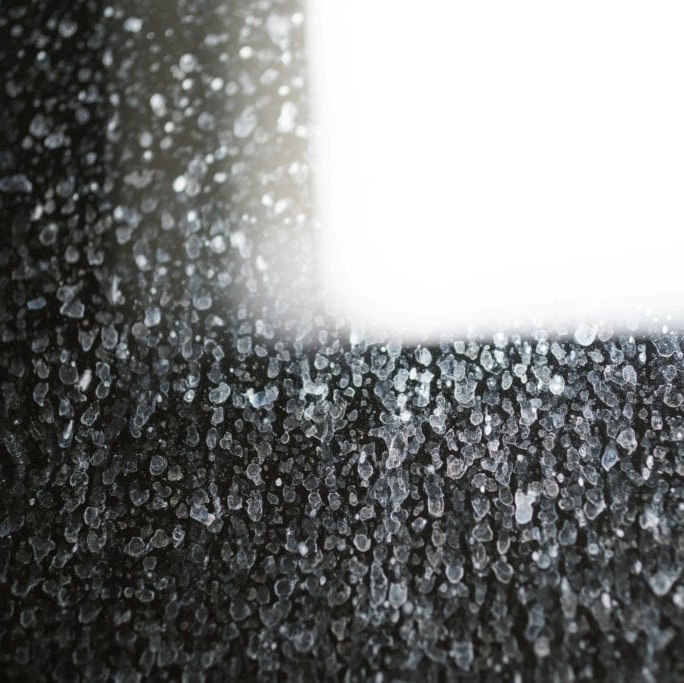
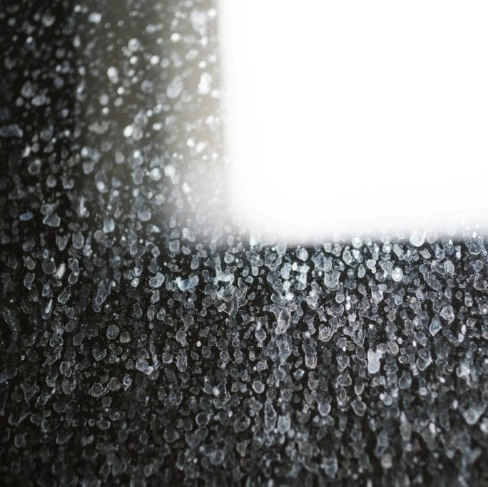

Email: lakedogstonecare@gmail.com
Phone: 704-880-5823
Email: lakedogstonecare@gmail.com
Phone: 704-880-5823
Cloudy shower doors? Hard water stains and mineral deposits can make your glass look permanently dirty. LakeDog Stone Care restores clarity with professional shower glass polishing and stain removal. We safely eliminate buildup and restore a polished, clean look without replacing your glass.
 


This service is perfect for shower doors, glass enclosures, and side panels in homes throughout Lake Norman, Mooresville, Davidson, Cornelius, and Denver NC.
Call LakeDog Stone Care for shower glass polishing and hard water stain removal throughout the Lake Norman area. Affordable, effective, and fast.